Урок 17. Функции. Часть2
21 Февраля 2023

Загрузить материалы к уроку.
Продолжаем работать с функциями. Советую вам двигаться последовательно, от раздела к разделу, и стараться делать следующий шаг только после того, как раздел был усвоен.
Так же в данном уроке, очень часто повторяются методы, поэтому после каждого раздела, лучше очищать ваш playground, что бы избежать ошибок из за дублирования имен и свойств.
Аргументы в функциях
При создании функции, ваша задача придумать очень понятное название для нее, и это название должно быть созвучно с параметрами.
Что я имею в виду?! Давайте рассмотрим следующий пример:
Данная функция принимает в качестве параметра числовой массив и возвращает массив с четными значениями. Если вы не понимаете что происходит внутри данной функции, то вам следует ознакомится с прошлым уроком.
Вызов данной функции будет выглядеть следующим образом:
Имя такой функции будет звучать как get Even Numbers numbers. То есть у нас есть два повторяющихся слова в названии, и это ни как не повлияет на работоспособность вашей программы, но, согласитесь, глаз немного режет. В коде всё должно быть красиво и аккуратно, вы пишете код не для компилятора, а для людей, и рано или поздно в ваш проект кто-нибудь заглянет. На собеседовании очень часто обращают на это внимание, поэтому вы должны стараться сделать ваш код открытыми и понятным.
Как же нам исправить ситуацию?
Мы не можем избавится от этого параметра, и другое название не сильно улучшит ситуацию, например в прошлом уроке мы использовали для этого примера название values, но на тот момент мы не знали что с этим можно сделать.
Существует механизм, так сказать “синтаксический сахар”, который может значительно улучшить визуально вашу функцию. Ярлыки аргументов или по простому аргументы в функциях, нам в этом помогут. Это дополнительное имя перед параметром:
Как вы можете заметить, теперь у нас перед параметром появилось слово from, это и есть аргумент, который делает ваш код более выразительным, и понятным. При вызове такой функции, мы увидим только аргумент, параметр опускается.
По сути параметр numbers, является внутренним свойством, и вы используете его только во внутренней логике функции, а аргумент from не является свойством, он просто как продолжение имени функции при вызове.
Аргументы отвечают на вопрос куда? откуда? для чего? и так далее. Аргументы могут состоять из нескольких слов, в таком случае вы должны придерживаться стиля CamelCase - стиль написания составных слов, при котором несколько слов пишутся слитно без пробелов, при этом каждое слово внутри фразы пишется с прописной буквы. Стиль получил название CamelCase, поскольку прописные буквы внутри слова напоминают горбы верблюда. ✍CamelCase

Пропуск аргументов
Мы так же можем использовать пропуск аргумента, благодаря которому, скроем не нужный нам параметр при вызове функции.
Давайте снова обратимся к примеру:
Перед параметром numberOne мы определили нижнее подчеркивание, после которого поставили пробел и сам параметр. У numberTwo есть аргумент and.
Нижнее подчеркивание перед параметром это и есть пропуск аргумента, мы его не прописываем, но при этом говорим что параметр при вызове будет опускаться.
Таким образом вызов этой функции будет выглядеть следующим образом:
При вызове функции параметр numberOne отсутствует, потому что мы поставили перед ним пропуск аргумента (_), а параметр numberTwo отсутствует, потому что мы поставили перед ним аргумент and.
Значение параметров по умолчанию
При объявлении функции (ее создании) вы можете задавать для параметров значения по умолчанию. Благодаря этому параметры с значением по умолчанию можно опускать (не использовать при вызове)
Давайте обратимся к примеру:
Данная функция принимает имя в параметре и выводит на консоль фразу с этим именем. Соответсвенно при вызове данной функции мы обязаны инициализировать параметр name (передать в name значение).
Вызов будет выглядеть так:
Представьте ваше приложение. У вас на экране поле ввода и две кнопки снизу:
Если пользователь нажимает на кнопку “Зарегистрироваться”, то мы вызываем метод greet и передаем в параметр name то что внесет пользователь в текстовое поле. По нажатию на кнопку “Войти как гость”, мы вызываем метод, где параметр name имеет значение по умолчанию. Конечно, в реальных проектах это несколько иначе работает, и вы обязательно узнаете об этом на втором модуле, но для общего представления, что функция может быть вызвана в нескольких местах с разными параметрами, этот пример хороший.
Чтобы задать параметр с значением по умолчанию, мы должны после типа данных поставить равно и задать любое нужное нам значение:
Таким образом при вызове данной функции мы данный параметр можем опускать (не прописывать при вызове):
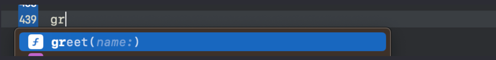Обратите внимание, что параметр полупрозрачный, это нам говорит о том что параметр стал не обязательным и мы можем его не использовать:
Теперь вызывая функцию, вы решаете нужен вам параметр или нет. Если вы его не зададите при вызове, то компилятор возьмет то значение, которое вы прописали при объявлении функции.
Чтобы сделать не обязательный параметр активным нужно зажать кнопку option и нажать enter:
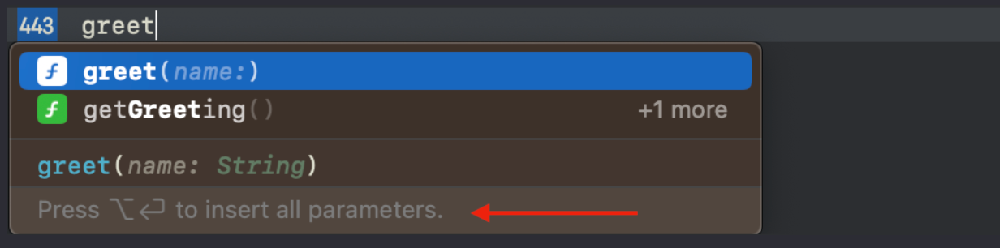Теперь давайте подумаем какой мы получим результат на консоли при следующих вызовах:
(1) Для свойства name при вызове функции не задано ни какого значения, оно у нас инициализированно заранее, при объявлении этой функции (ее создании), а это значит что результат будет: “Hello, Guest!”
(2) Здесь мы инициализируем свойство в момент вызова, поэтому компилятор возьмет это значение, а значение по умолчанию использовать не будет, и мы получим следующий результат: “Hello, Ann!”
Если вы до конца не понимаете этот процесс, то просто запомните алгоритм, если вы используете параметр при вызове функции (2), то значение по умолчанию не используется, и наоборот, если вы не используете параметр при вызове функции (1), то будет использовано значение по умолчанию.
Давайте рассмотрим подобный пример, но уже с опциональным значением, это удобный механизм.
У нас есть два параметра у функции, первый является опциональным, и каждый их них имеет значение по умолчанию. Внутри функции мы извлекаем опциональное значение, если у нас это получается то мы отображаем и сообщение и имя, если нет, то только сообщение. Таким образом мы можем комбинировать параметры при вызове:
Первый вызов функции без параметровиспользует значения по умолчанию обоих параметров, что приводит к выводу сообщения “Hello!”. Второй вызов передает только name, а message использует значение по умолчанию “Hello”. Третий вызов передает оба параметра, и функция выводит приветствие “Hi, Ann!”
То есть вы можете комбинировать параметры, и изменять только те которые необходимо.
Вариативый параметр
С помощью вариативного параметра мы можем передать в функцию любое количество значений. Тип вариативного параметра выглядит как тип данных с тремя точкам после:
Double…
Int…
String…
Одним словом любой тип данных с тремя точками после.
Давайте посмотрим на реализацию метода с таким параметром:
Объявляем функцию printNumbers. Что бы имя функции при вызове было красивым мы убираем повторяющиеся название numbers, используя для этой цели нижнее подчеркивание вместо аргумента.
Внутри функции с вариативным параметром мы работаем как с обычным массивом, то есть делаем перебор по коллекции numbers.
Вызов такой функции будет выглядеть следующим образом:
В параметр мы просто передаем любые значения типа Int, потому что вариативный параметр был этого типа.
Вариативный параметр может иметь сразу несколько значений или не одного. Функция может иметь несколько вариативных параметра, но старайтесь использовать аргументы, что бы было понятно, что к чему относится.
Еще немного о возвращаемых значений
Давайте посмотрим на простую функцию из прошлого урока без параметров и возвращаемых значений:
Если мы присвоим результат работы данной функции новому свойству, то наше свойство будет иметь очень странный тип данных:
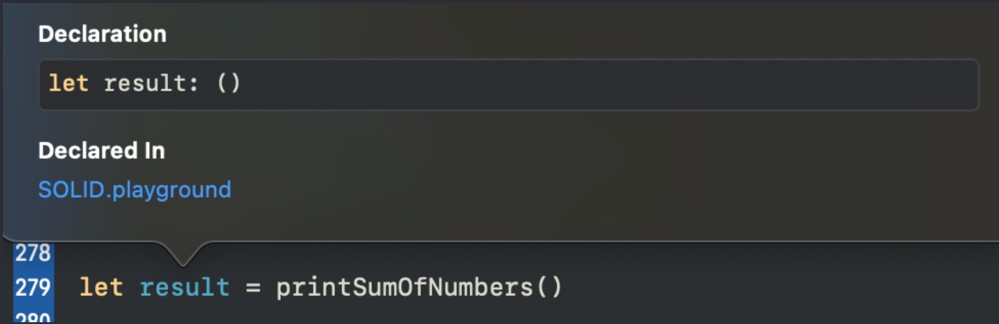Давайте разбираться почему так.
Создадим подобную функцию, но на этот раз она будет возвращать значение, и присвоим результат ее работы новому свойству:
Если вы посмотрите на тип value, то вы обнаружите, что он имеет тип Int, потому что наша функция вернула в него результат своей работы, то есть тот тип который мы определили после результирующей стрелки.
В функциях которые ничего не возвращают тоже есть результирующая стрелка, просто она не прописывается по умолчанию:
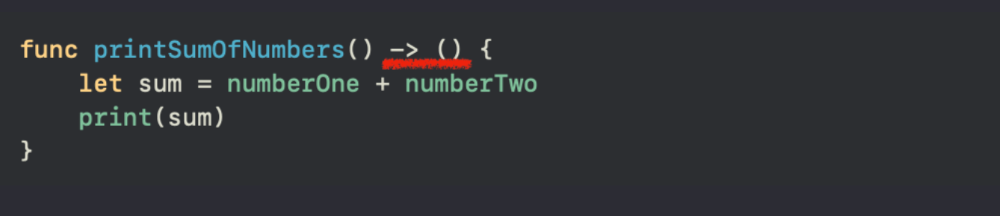Поэтому свойство result имеет в качестве типа данных пустые скобки. По сути это пустота, то есть ничего, и многие вместо круглых скобок используют Void, это псевдоним круглых скобок, так скажем для красивого отображения:
В таком случае свойство result будет иметь в качестве типа данных этот псевдоним:
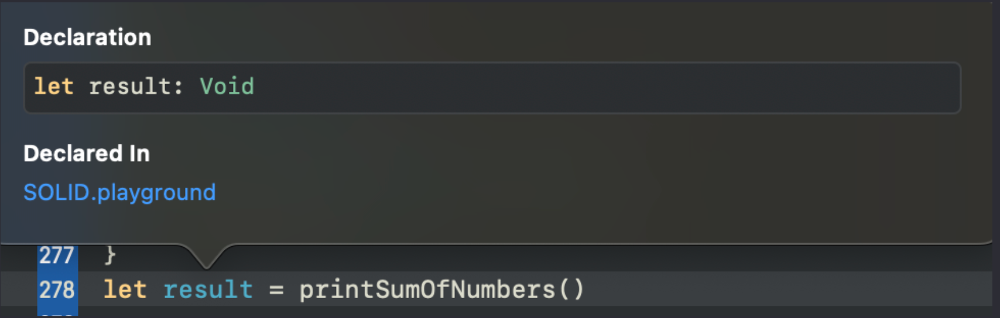Конечно, не имеет смысл присваивать Void в свойство, вам об этом мягко намекнет xcode желтым уведомлением.
Раскрою вам секрет print является системной функцией, реализация которой скрыта от наших глаз, и она ничего не возвращает, а только принимает, поэтому если мы ее присвоим свойству, то тоже получим пустые круглые скобки.
Функциональные типы данных
В языке swift все объекты имеют свой тип данных, и функции не исключение.
До этого момента мы с вами всегда запускали функцию, то есть прописывали круглые скобки при вызове, на этот раз мы с вами не будем вызывать функцию, а сделаем ее копию:
Как вы можете заметить, после имени функции нет круглых скобок, то есть функция не была вызвана, я присваиваю свойтству action не результат работы функции типа Int, а указатель на функцию, можно сказать копирую ее, и тип данных такого свойства будет следующим:
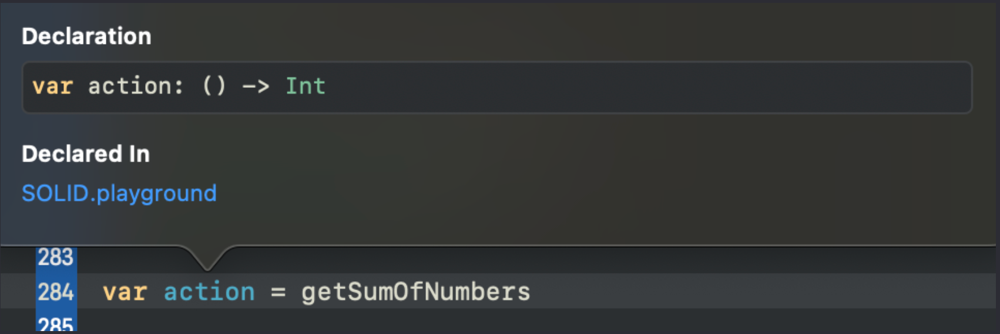Если у вас в коде есть две одноименные функции, но с разными параметрами или возвращаемыми значениями, что делает их разными, то вы не сможете из них сделать копию, потому что компилятору без скобок не понятно, что за функцию вы хотите копировать.
Тип функции строится из параметров функции и ее возвращаемого значения. Мы видим что функция getSumOfNumbers не имеет ни каких параметров, потому что круглые скобки пустые, но зато имеет возвращаемое значение типа Int.
Для примера мы с вами рассмотрим некоторые ранее созданные функции:
свойство result будет ссылаться на функцию printSumOfNumbers, то есть по сути копировать ее, и тип данного свойства будет либо () -> (), либо () -> Void, это одно и тоже, просто Void выглядит более понятным. О чем нам говорит этот тип данных? О том что наша функция не имеет параметров, и ничего не возвращает.
Скопируйте следующий код к себе в playground и ответьте на вопросы в коде:
Самостоятельно проверьте тип этих свойств зажав option и кликнув по свойству (если не сработает, то попробуйте запустить компилятор и повторить действие).
Ответ будем следующим:
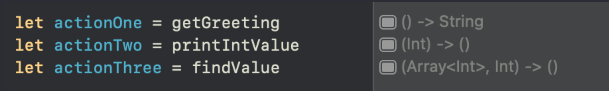Если функция имеет несколько параметров, то типы всех параметров, через запятую, будут отражены в типе самой функции, как в свойстве actionThree, которое в качестве параметра имеет и массив типа Int и значение типа Int, без возвращаемых значений.
Зафиксируем один момент.
Когда вы хотите вызвать функцию, то вы прописываете круглые скобки, если вы хотите просто сделать копию функции, то скобки прописывать не нужно.
Скопированную функцию вы можете вызвать в дальнейшем:
новая функция actionOne отрабатывает точно так же как и getGreeting, потому что по сути они обе ссылаются на одну и ту же реализацию.
Чтобы вызвать новую функцию необходимо прописать круглые скобки.
Если у функции есть параметры, то компилятор не поможет вам их проставить, это нужно будет сделать самостоятельно:
Копия функции будет выполнять точно такие же действия что и findValue, как уже было сказано выше они ссылаются на одну и ту же реализацию.
Функции в качестве параметров
Мы с вами выяснили, что у функций есть тип данных, а это значит, что мы смело можем этот тип использовать либо в свойствах:
Либо в параметрах других функций, одним словом делать все что и с обычными типами данных.
Сигнатура функции – по сути тип какой то функции, не обязательно конкретной, например под сигнатуру свойства actionOne так же подойдет любая другая функция с типом () -> String
Давайте создадим функцию, которая будет принимать другую функцию в качестве параметра.
Ранее мы выяснили, что параметр функции это константа, по сути свойство, и сейчас наш параметр operation является свойством с типом (Int, Int) -> Int. то есть мы в него можем передать функцию данной сигнатуры, а если мы инициализируем свойство operation другой функцией, то operation будет ее копией, а это значит внутри функции performOperation мы можем вызвать эту копию функции.
По сигнатуре мы видим что копия функции будет принимать два целых числа, и возвращать тип Int, который мы присваиваем свойству result.
Да, звучит не совсем просто, но давайте создадим сперва, подходящую под сигнатуру параметра, функцию, а затем вызовем performOperation и проследим каждый шаг.
Эта функция имеет тип (Int, Int) -> Int это как раз тот тип который нужен нам для параметра функции performOperation:
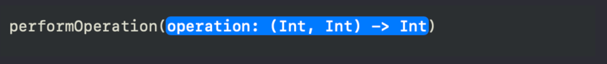Обращайте внимание на тип, который от нас ждет xcode, не вставляйте в параметр бездумно данные!
в параметр нужно передать именно тип (Int, Int) -> Int, поэтому круглые скобки у метода getSumOfNumbers мы не прописываем. Если мы пропишем скобки и даже передадим туда значения, то функция getSumOfNumbers будет вызвана и вернет нам результат свой работы, а это тип Int, вы получите ошибку не соответствия типов, так как от нас требуют тип (Int, Int) -> Int.
Ну и давайте подумаем как это все работает:
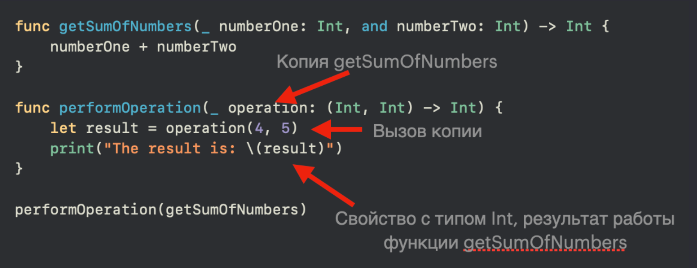Когда мы вызываем функцию performOperation мы ссылаемся на реализацию этой функции выше, далее компилятор видит переданную в параметр operation функцию, и делает ее копию (потому что мы не поставили круглые скобки у getSumOfNumbers)
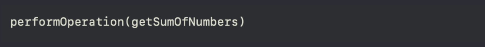после этого компилятор проваливается в реализацию performOperation, а там уже присваивает свойству result, результат работы копии функции operation, в параметры которой передает какие-то значения, то есть мы запускаем эту копию (так как есть круглые скобки):
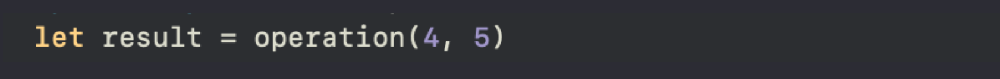а она уже ссылается на реализацию getSumOfNumbes и выполняет код внутри:
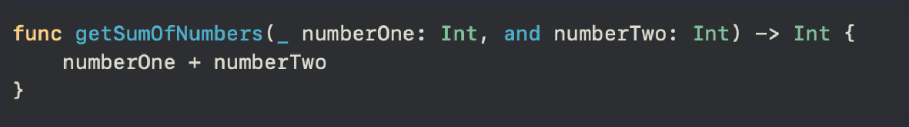После чего выводит на консоль сообщение с результатом:
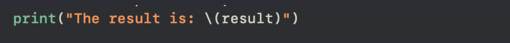Подумайте какой результат мы увидим на консоли, чему будет равно свойство result? Если вы можете ответить на этот вопрос без компилятора, то тема вами усвоена, если нет, то следует еще раз прочитать все с самого начала.